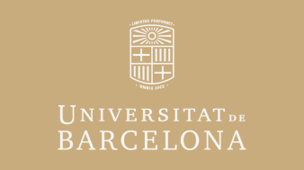
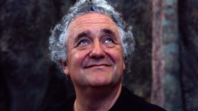

INSTITUCIONAL
Comunicat de l’equip de govern de la UB
INSTITUCIONAL
El 18 de desembre, CarmeRuscalleda serà investida doctora honoris causa per la UBEs premia així l’enfocament innovador de l’única xef que ha tingut set estrelles Michelin, gran defensora de les essències de la cuina catalana.

CULTURA
Concert de Nadal el 13 i 14 de desembreL'entrada és lliure i gratuïta. Les invitacions es poden obtenir a partir del dilluns 11.

SOLIDARITAT
La Facultat d’Infermeria col·labora amb La MaratóAlumnes voluntàries del grau d’Infermeria organitzen dues activitats sobre drets sexuals i prevenció d’infeccions de transmissió sexual.